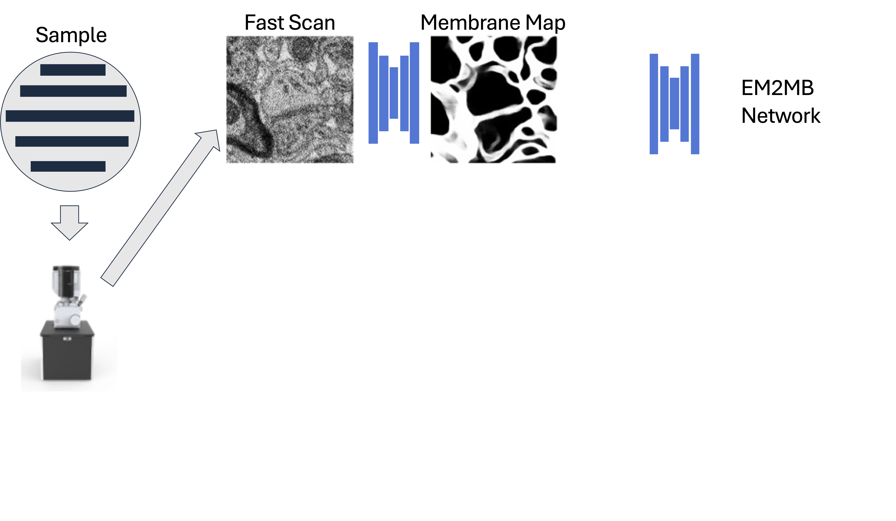

https://bit.ly/U01MilestonesSamuel2024
Milestone Report Meeting - U01-NS132158
Principal Investigators:
Aravinthan Samuel (contact), Jeff Lichtman, Hanspeter Pfister, Nir Shavit, Brock Wester
Project Title:
BRAIN CONNECTS: Rapid and Cost‐effective Connectomics with Intelligent Image Acquisition, Reconstruction, and Querying
Paper under review at
Nature Methods
Rapid and Cost‐effective Connectomics
with Intelligent Image Acquisition, Reconstruction, and Querying
Yaron Meirovitch
1,
Core Francisco Park
1,
Lu Mi
2,
Pavel Potocek
3,
Shashata Sawmya
2,
Yicong Li
1,
Ishaan Chandok
1,
Thomas Athey
2,
Neha Karlupia
1,
Yuelong Wu
1,
Daniel Berger
1,
Richard Schalek
1,
Hanspeter Pfister
1,
Remco Schoenmakers
2,
Maurice Peemen
2,
Jeff W. Lichtman
1,
Aravinthan D.T. Samuel
1,
Nir Shavit
2
1 Harvard, 2 MIT, 3 Thermofisher
Link to BiorxivConnectomics

The problem is visualizing tissue at the 1-10 millimeter scale
and
resolving
at the nanometer scale
Our testbed: Mouse Visual Cortex
Karlupia et al. (2023)
Scanning Electron Microscopes
1 cubic millimeter
↓
4 nm × 4 nm × 30 nm per voxel
↓
2,000,000,000,000,000 pixels

1 µs / pixel
↓
60 years

1 µs / pixel
with 61 beams
↓
~2 years
Scanning Electron Microscopes
1 cubic millimeter
↓
4 nm × 4 nm × 30 nm per voxel
↓
2,000,000,000,000,000 pixels
Increase the speed of
single beam SEM by 7-fold
↓
Lower the price point of connectomics
1 µs / pixel
↓
60 years
1 µs / pixel
with 61 beams
↓
~2 years
Scanning Electron Microscopes
1 cubic millimeter
↓
4 nm × 4 nm × 30 nm per voxel
↓
2,000,000,000,000,000 pixels
Increase the speed of
single beam SEM by 7-fold
↓
Lower the price point of connectomics
1 µs / pixel
↓
60 years
25 ns / pixel
↓
1.5 years
1 µs / pixel
with 61 beams
↓
~2 years
Fast, noisy images → lower segmentation quality


Long dwell times fix errors
Long dwell times fix errors
but not everywhere...
Segmentation accuracy varies spatially

Segmentation accuracy varies spatially
but also varies predictably
The idea in a 🥜
Use ultrafast imaging everywhere
Add slow imaging only where errors might occur
We built an ML-trained "error network"
We built an ML-trained "error network"
Trained with images containing segmentation errors
Error network predicts error prone regions

The microscope rescans any specified sub-region
The microscope rescans any specified sub-region

Bounding boxes around error-prone regions are slowly rescanned
The microscope rescans any specified sub-region
Bounding boxes around error-prone regions are slowly rescanned
Rescans and fast scans are fused
The microscope rescans any specified sub-region
Bounding boxes around error-prone regions are slowly rescanned
Rescans and fast scans are fused
Do boundary discontinuities cause segmentation problems?
We built the EM2MB network that is robust to image discontinuity
We built the EM2MB network that is robust to image discontinuity

Rescan an arbitrary S-shaped mask
We built the EM2MB network that is robust to image discontinuity
Rescan an arbitrary S-shaped mask
Create fused image
We built the EM2MB network that is robust to image discontinuity

Rescan an arbitrary S-shaped mask
Create fused image
EM2MB seamlessly segments across discontinuities
The pipeline

The pipeline

The pipeline

The pipeline
The pipeline

The pipeline

The pipeline

The pipeline

It's a waste to rescan cell bodies, blood vessels, etc.
It's a waste to rescan cell bodies, blood vessels, etc.
we trained a MUSTEXCLUDE network
that eliminates spurious rescan masks
MUSTEXCLUDE

High-resolution is sometimes always needed
High-resolution is sometimes always needed
we trained a MUSTINCLUDE network
to always rescan desired features like synapses
MUSTINCLUDE
Fused images can be fully segmented
but boundaries can be visually unappealing
Fused images can be fully segmented
but boundaries can be visually unappealing

Super-resolution/generative AI makes
fast scans resemble slow scans
How fast is SmartEM when image quality is the same as traditional EM?
Smart pixel time, $ t_{smart}$
\[ t_{smart}=t_{initial} + \alpha t_{rescan} \]
$ \alpha$.... rescan rate
$ t_{initial}$.... initial dwell time
$ t_{rescan}$.... rescan dwell time
How fast is SmartEM when image quality is the same as traditional EM?
Smart pixel time, $ t_{smart}$
\[ t_{smart}=t_{initial} + \alpha t_{rescan} \]
$ \alpha$.... rescan rate
$ t_{initial}$.... initial dwell time
$ t_{rescan}$.... rescan dwell time
With image quality of traditional 1000 ns dwell time,
smart pixel times are 7-fold shorter

Scanning Electron Microscopes
1 cubic millimeter
↓
4 nm × 4 nm × 30 nm per voxel
↓
2,000,000,000,000,000 pixels
Increase the speed of
single beam SEM by 7-fold
↓
Lower the price point of connectomics
1 µs / pixel
↓
60 years
1 µs / pixel
with 61 beams
↓
~2 years
Mouse Visual Cortex Imaged with SmartEM
Mouse Visual Cortex Imaged with SmartEM
Initial Dwell Time ($t_{initial}$): 99 ns/pixel
Rescan Rate ($\alpha$): 3%
Rescan Dwell Time ($t_{rescan}$): 800 ns
Mouse Visual Cortex Segmented with SmartEM
3D Segmentation from SmartEM

Automated segmentation correctly identifies 65% of dendritic spines
Any missed spine can be proofread and corrected
Same benchmark performance as state-of-the-art multibeam pipeline
Milestone 1.1.1: Automated segmentation of membranes and synapses on SEM support computer
Success criteria: Software code run on SEM support computer producing segmentation and synapse classification results indistinguishable from offline processing of the same inputs as assessed by VI metric, carried out at a rate of at least 4 MB/sec per GPU.
Fast images are segmented and error-prone regions are calculated by the SEM support computer
in less time than fast acquisition by the SEM computer
Milestone 1.1.2: Image rescan and hybrid image generation on SEM support computer
Success criteria: Software code run on the SEM support computer producing rescan masks at a rate of 4MB of fast scan image/sec per GPU, with indistinguishable performance compared to the offline implementation.
During the learning phase, Error Network and FUSEDEM2MB are trained using traditional SEM
Milestone 1.1.2: Image rescan and hybrid image generation on SEM support computer
Success criteria: Software code run on the SEM support computer producing rescan masks at a rate of 4MB of fast scan image/sec per GPU, with indistinguishable performance compared to the offline implementation.
During the acquisition phase, images are rescanned and fused images are created in real-time
Milestone 1.1.3: Scan/rescan parameter evaluation
Success criteria: Framework and initial results testing scan/rescan parameters to determine tradeoffs for throughput vs. accuracy of segmentation and synapse classification.
SmartEM generates aligned and segmented connectomes for mouse cortex with equal 3D quality as multi-beam SEM
Milestone 1.1.4: Evaluation framework for human interpretation of hybrid images
Success criteria: Establish a transparent framework for human interaction with hybrid images for feature evaluation and proofreading of segmentation and synapse classification results.

Raw output of SmartEM is fully proofread-able by a human annotator.
Generative AI translates the style of SmartEM images to look like traditional EM images.
Milestone 1.1.5: Integrate segmentation analyses into rescan calculations
Success criteria: Prototype software that applies streamlined ROI detection and segmentation to enable realtime extraction of connectomic data. Results compared to offline analysis using extracted segment cross sections, to inform further iterative development.
ERRNET identifies regions susceptible to segmentation errors and re-scans them at a higher quality.
Complementary neural network (MUSTINCLUDE) always re-scans high-value regions, e.g., synapses.
Milestone 2.1.1: Highly parallelized algorithm for cloud-based image alignment
Success criteria: Convert alignment and segmentation software pipelines into multi-threaded algorithms for cluster compute.

Block matching technique obtain matching points between neighboring images.
Elastic transformations map raw data to the aligned volume are computed by mesh relaxation.
Algorithms re-developed for on-board alignment in local instantiation using Python.
Year 2 connectomics goal

Superior colliculus, similar absolute size across species
Important comparative changes in structure and function from non-foveal mouse to foveal primate
0.3 mm x 0.3 mm x 1 mm volume captures lateral extent of largest neuron (wide-field vertical neuron)
One year with current SmartEM pipeline
Year 2 pipeline goal

Year 2 pipeline goal
Year 2 pipeline goal

Year 2 pipeline goal
Year 2 pipeline goal